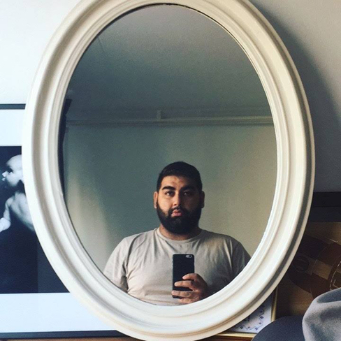

Faith Mayan is a NYC based photographer. Born and raised in Queens, Faith spent his early teenage years exploring the city, where his love for photographing people stemmed from. He shoots a range of subjects from fashion, to documentary style portraits. Faith is constantly exploring things to photograph and new stories to tell with his images.